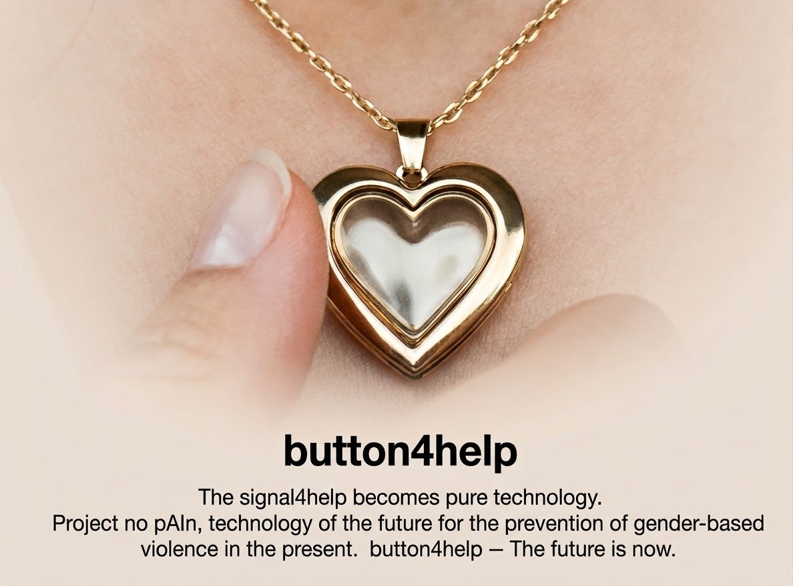

Portare no pAIn™ nella tua organizzazione
Comuni, associazioni, sportelli antiviolenza, scuole e aziende: incontri, dimostrazioni e materiali per far conoscere gli strumenti a chi ne ha bisogno.
no pAIn™ nasce in università e cresce con chi ci mette competenze, mestiere e idee. La collaborazione è con il Politecnico di Bari, nella persona del Prof. Ing. Agostino Giorgio, ideatore e responsabile del progetto.
button4help™ funziona premuto per un secondo: non deve somigliare a un dispositivo di emergenza, anzi, più passa inosservato meglio è. Per questo cerchiamo chi realizza gioielli e bigiotteria e sa trasformarlo in un oggetto che si indossa ogni giorno.
Il pulsante è un dispositivo Bluetooth di un produttore terzo: la collaborazione riguarda l'accessorio che lo contiene, non la sua elettronica.

Compila i campi: il modulo apre il tuo programma di posta con il messaggio già scritto, che arriva all'indirizzo del Prof. Ing. Agostino Giorgio al Politecnico di Bari. Niente viene inviato o registrato da questo sito.
Preferisci scrivere direttamente? agostino.giorgio@poliba.it ↗
Comuni, associazioni, sportelli antiviolenza, scuole e aziende: incontri, dimostrazioni e materiali per far conoscere gli strumenti a chi ne ha bisogno.
Il progetto nasce nel laboratorio ELEDIGILAB del Politecnico di Bari ed è descritto in pubblicazioni scientifiche: c'è spazio per tesi, prove sul campo e sviluppi congiunti.
Chi si occupa di comunicazione, formazione o eventi può aiutare a far arrivare queste app a chi non sa che esistono.